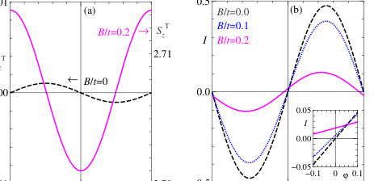
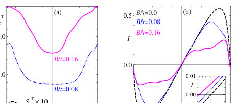
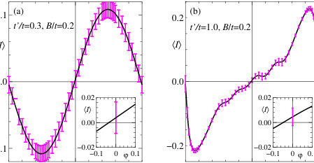

Authors: Yositake Takane, Aurélien Manchon, Gen Tatara
Type: theory · Category: other · PDF: https://arxiv.org/pdf/2610.09248v1
Analysis basis: full PDF text, analyzed in chunks



Summary. This paper theoretically examines how extrinsic spin-orbit interaction in an SNS Josephson junction can induce a superconducting diode effect. By applying a Zeeman field gradient, the system generates spin polarization, which in turn drives the Josephson current via the Inverse Spin Hall Effect. The study finds that this diode effect is significantly enhanced when the coupling between the normal and superconducting leads is strong (metallic regime).
Why it may be interesting. This work connects spin-orbit coupling, superconducting phenomena, and non-linear transport effects (diode effect), which are key areas in mesoscopic physics and quantum electronics.
Main problem. The study investigates the superconducting diode effect (direction-dependent critical current) in Josephson Junctions incorporating extrinsic Spin-Orbit Interaction (SOI).
Main result. The application of a Zeeman field gradient induces an anomalous phase shift via the Inverse Spin Hall Effect, leading to a measurable diode effect, which is more pronounced in the metallic coupling regime.
Method. The research employs numerical simulations to calculate spin density and Josephson current, analyzing the current's dependence on the superconducting phase difference.
Model / system. The model is a Superconductor-Normal Metal-Superconductor (SNS) junction where the Normal segment is treated as a 2DES with extrinsic SOI. The system is analyzed in both tunneling and metallic coupling regimes.
Key observables. Spin density components ($S_{B,z}, S_{T,z}$), Josephson current $I(\varphi)$, and the diode efficiency $\eta$.
Important parameters / regimes. The strength of the Zeeman field gradient ($B/t$) and the coupling strength between N and S segments (tunneling vs. metallic regime).
Assumptions / limitations. The superconducting pair potential ($\Delta$) is assumed constant throughout the analysis.
Figures summary. Figures illustrate schematics of the junction, the dependence of spin density and current on Zeeman field strength, and the ensemble-averaged current in different coupling regimes.
Paper structure. The paper proceeds by first establishing the generation of the Spin Hall Effect by the Josephson current, then introducing the Zeeman field gradient to induce spin polarization, and finally quantifying the resulting non-reciprocity and diode effect in different coupling limits.
The spin density and Josephson current at equilibrium are studied numerically in a superconductor-normal metal-superconductor (SNS) junction with extrinsic spin-orbit interaction in the N segment. This system preserves structural inversion symmetry. We find that the Josephson current generates the spin Hall effect, resulting in an opposite spin density near the two edges of the N segment. We also find that a Zeeman magnetic field with gradient applied to the N segment generates an anomalous phase shift due to the inverse spin Hall effect, resulting in a diode effect when higher harmonics of the Josephson current are present. These results are consistent with those of a previous theoretical study based on diagrammatic perturbation theory. We find that the diode effect becomes more pronounced when stronger coupling between the N and S segments enhances the higher harmonics.